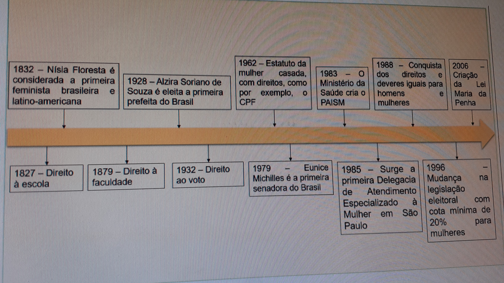

Linha do tempo do empoderamento feminino na participação da mulher na sociedade brasileira
A linha do tempo da participação da mulher na sociedade brasileira, mostra como o papel da mulher se modificou ao longo do tempo e isso ajuda a entender como elas ganharam espaço, nos diversos setores e ambientes da sociedade, inclusive o mercado de trabalho
1827 – Surge a primeira lei sobre educação das mulheres, permitindo que frequentassem somente as escolas elementares, já que as instituições de ensino mais adiantadas ainda eram proibidas a elas.
1832 – A brasileira Nísia Floresta, do Rio Grande do Norte, defendia mais educação e uma posição social mais alta para as mulheres. Ela escreveu um livro refletindo os direitos das mulheres, onde ela introduz suas próprias reflexões sobre a realidade brasileira. É por isso que é considerada a primeira feminista brasileira e latinoamericana.
1879 – As mulheres têm autorização do governo para estudar em instituições de ensino superior; mas as que seguiam este caminho eram criticadas pela sociedade.
1928 – O governador do Rio Grande do Norte, Juvenal Lamartine, consegue uma alteração da lei eleitoral estadual dando o direito de voto às mulheres. Elas foram às ruas, mas seus votos foram anulados. No entanto, foi eleita a primeira prefeita da história do Brasil: Alzira Soriano de Souza, no município de Lajes – RN.
1932 – Getúlio Vargas promulga o novo Código Eleitoral, garantindo finalmente o direito de voto opcional às mulheres brasileiras, se tornando obrigatório em 1946.
1962 – É criado em 27 de agosto, o Estatuto da Mulher Casada, que garantiu entre outras coisas que a mulher não precisava mais de autorização do marido para trabalhar, receber herança e em caso de separação ela poderia requerer a guarda dos filhos. Também, houve a conquista do CPF, porque até então elas usavam o do marido.
1979 – Eunice Michilles, torna-se a primeira mulher a ocupar o cargo de Senadora, por falecimento do titular da vaga.
1983 – Surgem os primeiros conselhos estaduais da condição feminina em Minas Gerais e São Paulo, para traçar políticas públicas para as mulheres. O Ministério da Saúde cria o Programa de Assistência Integral à Saúde da Mulher (PAISM), em resposta à forte mobilização dos movimentos feministas, baseando sua assistência nos princípios da integralidade do corpo, da mente e da sexualidade de cada mulher. O PAISM enquanto política de saúde, surge como resposta aos problemas de saúde e às necessidades da população feminina.
1985 – Surge a primeira Delegacia de Atendimento Especializado à Mulher (DAEM) em São Paulo e muitas outras são implantadas em outros estados brasileiros. 20 1988 – Por intermédio do lobby do batom, liderado por feministas e pelas 26 deputadas federais constituintes, as mulheres obtêm importantes avanços na Constituição Federal, garantindo igualdade a direitos e obrigações entre homens e mulheres perante a lei.
1996 – O Congresso Nacional inclui o sistema de cotas, na Legislação Eleitoral, obrigando os partidos a inscreverem, no mínimo, 20% de mulheres nas chapas proporcionais.
2006 – Sancionada a Lei Maria da Penha. Dentre as várias mudanças, a lei aumenta o rigor nas punições das agressões contra a mulher.
Mas, mesmo após essa trajetória, ainda em 2018, encontra-se presente nas organizações a questão da diferença de salários entre homens e mulheres que exercem o mesmo cargo, função e atividades. Segundo informações do Fórum Mundial de 2015, o salário de uma mulher nessas condições é menor que o salário de um homem.
Essa desigualdade foi calculada mediante a análise de algumas variáveis, tais como: fatores econômicos, saúde, educação e participação política das mulheres em determinada sociedade e também a qualidade dos empregos que as mulheres têm mais possibilidades de conseguir, sendo mais relevante em países desenvolvidos, porém isso não significa que alcancem melhores posições com melhores salários, ou seja, ter um emprego não é ser uma líder, pois devido aos preconceitos sofridos às mulheres têm dificuldade de alcançar tal posição.
Ao analisar as estatísticas a nível Brasil, a pesquisa do Fórum Mundial de 2015 informa que o país é 124º no ranking entre os 142 países que foram pesquisados 21 no quesito de igualdade salarial de gêneros. E segundo o IBGE (2014), a renda média das brasileiras corresponde a 68% da renda dos brasileiros. E no que compete a cargos de confiança verifica-se também que 60,9% dos cargos gerenciais (públicos ou privados) eram ocupados por homens enquanto que apenas 39,1% pelas mulheres, de acordo com a pesquisa da Agência IBGE de 2016.
Mas, apesar desses fatores, é pouco provável que as mulheres deixem seus empregos por conta de baixos salários, um aspecto que pode ser positivo para o contratante e considerando a manutenção da empregabilidade é favorável também para elas, mas analisando que isso pode incentivar que os empregadores não promovam mulheres, pode-se dizer que este é um dado importante para prejudicar a valorização do trabalho feminino.
Assim sendo, com o apresentado nota-se que ao longo da história o empoderamento feminino não só influenciou, como agiu para incentivar a mulher na busca de seu espaço na sociedade, por meio de lutas e movimentos sociais que buscaram desmitificar o pensamento machista preponderante em relação a ela e o seu papel social.